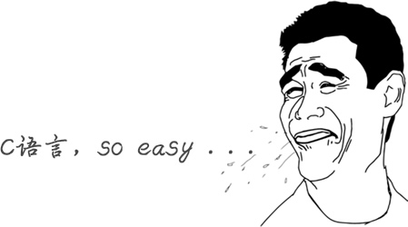
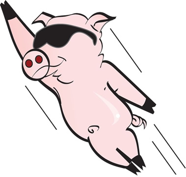

C语言究竟是一门怎样的语言？
对于大部分程序员，C语言是学习编程的第一门语言，很少有不了解C的程序员。
C语言除了能让你了解编程的相关概念，带你走进编程的大门，还能让你明白程序的运行原理，比如，计算机的各个部件是如何交互的，程序在内存中是一种怎样的状态，操作系统和用户程序之间有着怎样的“爱恨情仇”，这些底层知识决定了你的发展高度，也决定了你的职业生涯。
如果你希望成为出类拔萃的人才，而不仅仅是码农，这么这些知识就是不可逾越的。也只有学习C语言，才能更好地了解它们。有了足够的基础，以后学习其他语言，会触类旁通，很快上手，7 天了解一门新语言不是神话。
C语言概念少，词汇少，包含了基本的编程元素，后来的很多语言（C++、Java等）都参考了C语言，说C语言是现代编程语言的开山鼻祖毫不夸张，它改变了编程世界。
正是由于C语言的简单，对初学者来说，学习成本小，时间短，结合本教程，能够快速掌握编程技术。
在世界编程语言排行榜中，C语言、Java 和 C++ 长期霸占着前三名，加上近几年爆火的 Python，四门语言的市场占用率之和接近 50%，拥有绝对优势，如下表所示：
在 2017 和 2019 年，由于小型软件设备的蓬勃发展以及汽车行业底层软件的增加，C语言还拿下了「年度编程语言」的桂冠，成为全球增长最快的编程语言。下表列出了最近 10 年的“年度编程语言”：
C语言诞生于20世纪70年代，年龄比我们都要大，我们将在《C语言的三套标准：C89、C99和C11》一节中讲解更多关于C语言的历史。
当然，C语言也不是没有缺点，毕竟是70后老人，有点落后时代，开发效率较低，后来人们又在C语言的基础上增加了面向对象的机制，形成了一门新的语言，称为C++，我们将在《C语言和C++到底有什么关系》中讲解。
编程语言的发展大概经历了以下几个阶段：
C语言出现的时候，已经度过了编程语言的拓荒年代，具备了现代编程语言的特性，但是这个时候还没有出现“软件危机”，人们没有动力去开发更加高级的语言，所以也没有太复杂的编程思想。
也就是说，C语言虽然是现代编程语言，但是它涉及到的概念少，词汇少，思想也简单。C语言学习成本小，初学者能够在短时间内掌握编程技能，非常适合入门。
雷军说过，站在风口上，猪都能飞起来；C语言就是那头猪，不管它好不好，反正它飞起来了。
C语言在计算机产业大爆发阶段被万人膜拜，无疑会成为整个软件产业的基础，拥有核心地位。
软件行业的很多细分学科都是基于C语言的，学习数据结构、算法、操作系统、编译原理等都离不开C语言，所以大学将C语言作为一门公共课程，计算机相关专业的同学都要学习。
C语言被誉为“上帝语言”，它不但奠定了软件产业的基础，还创造了很多其它语言，例如：
C语言是有史以来最为重要的编程语言：要进入编程行业高手级别必学C语言，要挣大钱必学C语言，要做黑客、红客必学C语言，要面试名企、外企、高薪职位必学C语言。
C语言除了能让你了解编程的相关概念，带你走进编程的大门，还能让你明白程序的运行原理，比如，计算机的各个部件是如何交互的，程序在内存中是一种怎样的状态，操作系统和用户程序之间有着怎样的“爱恨情仇”，这些底层知识决定了你的发展高度，也决定了你的职业生涯。
如果你希望成为出类拔萃的人才，而不仅仅是码农，这么这些知识就是不可逾越的。也只有学习C语言，才能更好地了解它们。有了足够的基础，以后学习其他语言，会触类旁通，很快上手，7 天了解一门新语言不是神话。
C语言概念少，词汇少，包含了基本的编程元素，后来的很多语言（C++、Java等）都参考了C语言，说C语言是现代编程语言的开山鼻祖毫不夸张，它改变了编程世界。
正是由于C语言的简单，对初学者来说，学习成本小，时间短，结合本教程，能够快速掌握编程技术。
在世界编程语言排行榜中，C语言、Java 和 C++ 长期霸占着前三名，加上近几年爆火的 Python，四门语言的市场占用率之和接近 50%，拥有绝对优势，如下表所示：
| 2020年07月榜单 | ||
|---|---|---|
| 排名 | 语言 | 占有率 |
| 1 | C | 16.45% |
| 2 | Java | 15.10% |
| 3 | Python | 9.09% |
| 4 | C++ | 6.21% |
| 5 | C# | 5.25% |
| 6 | Visual Basic | 5.23% |
| 7 | JavaScript | 2.48% |
| 8 | R | 2.41% |
| 9 | PHP | 1.90% |
| 10 | Swift | 1.43% |
| 2021年07月榜单 | ||
| 排名 | 语言 | 占有率 |
| 1 | C | 11.62% |
| 2 | Java | 11.17% |
| 3 | Python | 10.95% |
| 4 | C++ | 8.01% |
| 5 | C# | 4.83% |
| 6 | Visual Basic | 4.50% |
| 7 | JavaScript | 2.71% |
| 8 | PHP | 2.58% |
| 9 | 汇编语言 | 2.40% |
| 10 | SQL | 1.53% |
| 2022年07月榜单 | ||
| 排名 | 语言 | 占有率 |
| 1 | Python | 13.44% |
| 2 | C | 13.13% |
| 3 | Java | 11.59% |
| 4 | C++ | 10.00% |
| 5 | C# | 5.65% |
| 6 | Visual Basic | 4.97% |
| 7 | JavaScript | 1.78% |
| 8 | 汇编语言 | 1.65% |
| 9 | SQL | 1.64% |
| 10 | Swift | 1.27% |
在 2017 和 2019 年，由于小型软件设备的蓬勃发展以及汽车行业底层软件的增加，C语言还拿下了「年度编程语言」的桂冠，成为全球增长最快的编程语言。下表列出了最近 10 年的“年度编程语言”：
| 年份 | 优胜者 |
|---|---|
| 2021 |
 Python Python |
| 2020 |
Python |
| 2019 |
C |
| 2018 |
Python |
| 2017 |
C |
| 2016 |
Go |
| 2015 |
Java |
| 2014 |
JavaScript |
| 2013 |
Transact-SQL |
| 2012 |
Objective-C |
C语言诞生于20世纪70年代，年龄比我们都要大，我们将在《C语言的三套标准：C89、C99和C11》一节中讲解更多关于C语言的历史。
当然，C语言也不是没有缺点，毕竟是70后老人，有点落后时代，开发效率较低，后来人们又在C语言的基础上增加了面向对象的机制，形成了一门新的语言，称为C++，我们将在《C语言和C++到底有什么关系》中讲解。
C语言难吗？
和 Java、C++、Python、C#、JavaScript 等高级编程语言相比，C语言涉及到的编程概念少，附带的标准库小，所以整体比较简洁，容易学习，非常适合初学者入门。

编程语言的发展大概经历了以下几个阶段：
汇编语言 --> 面向过程编程 --> 面向对象编程
- 汇编语言是编程语言的拓荒年代，它非常底层，直接和计算机硬件打交道，开发效率低，学习成本高；
- C语言是面向过程的编程语言，已经脱离了计算机硬件，可以设计中等规模的程序了；
- Java、C++、Python、C#、PHP 等是面向对象的编程语言，它们在面向过程的基础上又增加了很多概念。
C语言出现的时候，已经度过了编程语言的拓荒年代，具备了现代编程语言的特性，但是这个时候还没有出现“软件危机”，人们没有动力去开发更加高级的语言，所以也没有太复杂的编程思想。
也就是说，C语言虽然是现代编程语言，但是它涉及到的概念少，词汇少，思想也简单。C语言学习成本小，初学者能够在短时间内掌握编程技能，非常适合入门。
C语言是计算机产业的核心语言
也许是机缘巧合，C语言出现后不久，计算机产业开始爆发，计算机硬件越来越小型化，越来越便宜，逐渐进入政府机构，进入普通家庭，C语言成了编程的主力军，获得了前所未有的成功，操作系统、常用软件、硬件驱动、底层组件、核心算法、数据库、小游戏等都使用C语言开发。雷军说过，站在风口上，猪都能飞起来；C语言就是那头猪，不管它好不好，反正它飞起来了。

C语言在计算机产业大爆发阶段被万人膜拜，无疑会成为整个软件产业的基础，拥有核心地位。
软件行业的很多细分学科都是基于C语言的，学习数据结构、算法、操作系统、编译原理等都离不开C语言，所以大学将C语言作为一门公共课程，计算机相关专业的同学都要学习。
C语言被誉为“上帝语言”，它不但奠定了软件产业的基础，还创造了很多其它语言，例如：
- PHP、Python 等都是用C语言开发出来的，虽然平时做项目的时候看不到C语言的影子，但是如果想深入学习 PHP 和 Python，那就要有C语言基础了。
- C++ 和 Objective-C 干脆在C语言的基础上直接进行扩展，增加一些新功能后变成了新的语言，所以学习 C++ 和 Objective-C 之前也要先学习C语言。
C语言是有史以来最为重要的编程语言：要进入编程行业高手级别必学C语言，要挣大钱必学C语言，要做黑客、红客必学C语言，要面试名企、外企、高薪职位必学C语言。
关注公众号「站长严长生」，在手机上阅读所有教程，随时随地都能学习。内含一款搜索神器，免费下载全网书籍和视频。

微信扫码关注公众号